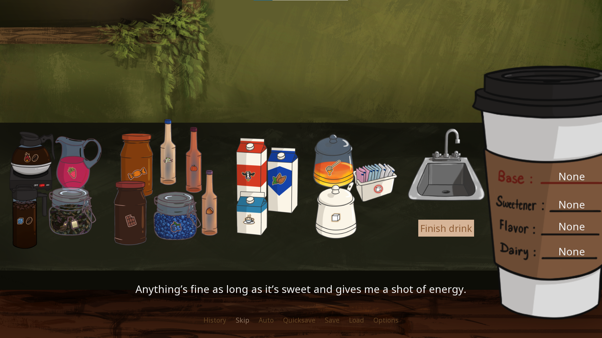
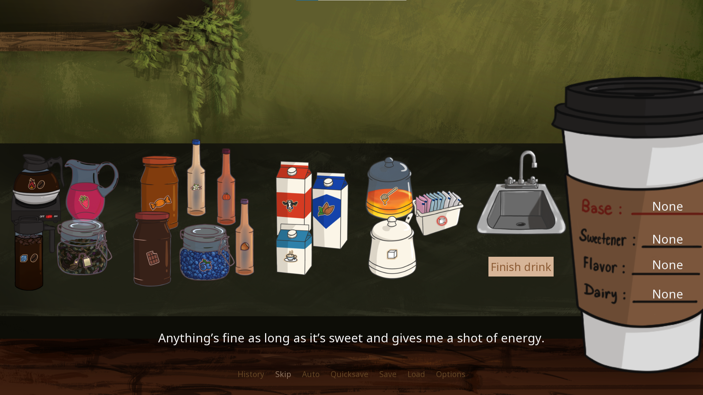
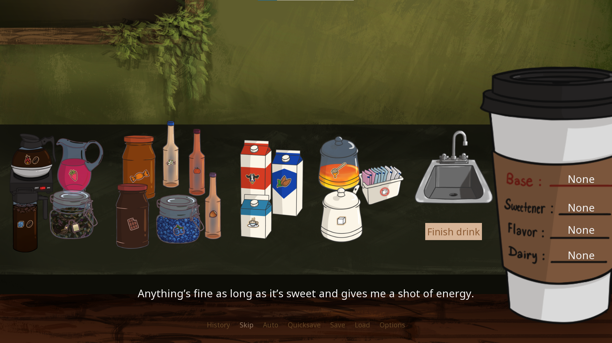

A multiplayer platformer where up to four robots fight their coworkers to maintain possession of a battery the longest!

About:
Slapsticklers was created over 7 weeks from conception to completion as part of the WPI IMGD program's Technical Game Design II class.
Slapsticklers is a competitive, multiplayer platforming game that allows up to four players to battle to hold on to a battery the longest! The longer you hold on to the battery, the more charge you'll store and the bigger a building you'll build! Who will be the best construction robot?
Development details:
Developed: 2022
Development time: ~7 weeks
Languages: C++
Tools: Unreal Engine 4, GitHub, Google Workspace, Trello (for Agile)
Team:
Lena Dias (myself) — programmer, designer, manager
Emily Austin — programmer
Zach Adams — environmental, UI artist
Stanley Cliche — character artist
Garrett Sheehan — programmer, designer
Will White — audio
My role:
Programmer
Scripted dialogue, character appearances, text effects, sound, and portrait movement throughout the game
Programmed the drink preparation minigame
Programmed menu features such as audio subtitles, developer comments
Programmed credits sequence
Managed version control, resolved Git conflicts
Organized file structure
Designer
Clarified experience goals and ensured all parts of the game reinforced core themes
Considered the game as a cohesive, thoughtful piece of art when designing
Constantly reflected on the game's messaging! Lots and lots of late night design thoughts
Designed UI
Decided on various "juice" effects to improve user experience such as screen shake, sound feedback, tooltips, etc.
Created multiple vertical slices of the game for asynchronous and sychronous playtesting demos
Created survey materials for gathering feedback on intuitivity, usability, stability
Reassessed design according to playtesting feedback
Manager
Onboarded and met weekly with a team of multiple artists with different schedules and priorities, readjusting and clarifying goals throughout process
Developed weekly plans, term plans, and year plans
Kept meeting notes, team agendas, and centralized team resources
Attended and guided discussion in meetings/group chats between team members, advisors, incorporating team's thoughts on the project
Created asset charts, dependency charts to help team members meet goals
My thoughts:
Definitely one of the first projects I was really proud of. During this class, you have a ton of work to do in the very little time a WPI class allots you. This was also my first time using Agile development, and on top of being a programmer and spending a lot of time polishing the design, I ended up sliding into a management role to keep the project on track. It was definitely stressful, but I also had a lot of fun trying to make the most out of the very few resources we had to work with. We wouldn't have had the opportunity for many more assets than we did, and mechanics would have to be deep without imposing too much on programmers. We'd also only have the opportunity for one map. I'm really happy with how our final design turned out; we created simple mechanics that combine to create some elegant depth, arranged the assets we had to provide environmental variety, and got some time to add a lot of polish!

 
